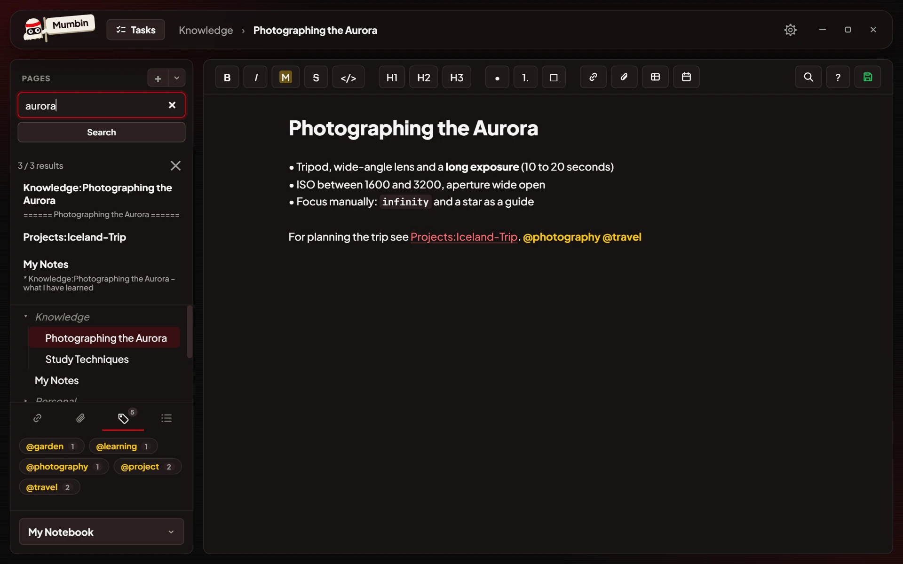

All posts / Article / 5 min read
Keep notes without the cloud: local, offline and under your control
Your notes live as files on your computer, not on someone else's servers. That makes them fast, available at any time and entirely your own business.
What “without the cloud” means
With a local notes app your texts live on your own hard drive. Nothing is uploaded automatically, and you need neither a user account nor an internet connection. Mumbin works exactly like that: every notebook is a folder of text files that you choose yourself.
What you gain with local notes
- Control: you decide where the files are, who sees them and when they are deleted.
- Speed: there is no waiting for servers. In a sample notebook with 2,000 pages, full-text search finishes in about 51 milliseconds.
- Availability: your notes are there on the train, on a plane and during a network outage, just as always.
- Privacy: with no account and no telemetry, no usage data is created anywhere.
- Simplicity: no subscriptions, no sign-in, no sync errors.

How to work locally with Mumbin
- Start the portable EXE and choose a folder, for example under Documents.
- Write your pages. Mumbin saves them as text files in that folder; attachments sit in folders beside them.
- Protect confidential pages with a password of their own or the vault. The rest is in the guide “Encrypt notes”.
- Back the folder up regularly, as you do with other important files.
Local, yet with you everywhere
Local does not mean tied to one computer. Copy the notebook folder with the EXE onto a USB stick or mirror it with a file-sync service of your choice. That way you take your notes along without Mumbin asking for an account. The details are in the guide “Take your notebook”.
Privacy from the start
Because the app sends no data to third parties, questions about where your notes are stored or who has access never come up. The interface loads no outside content and blocks external requests. How encryption and the program fit together is explained in the article How secure is Mumbin?
Frequently asked questions
Does Mumbin send notes to a server?
No. Mumbin has no cloud connection, no account and no telemetry. Your notes leave your computer only if you pass them on yourself.
Does Mumbin work without internet?
Yes. Every feature works offline. You only need a connection to download the EXE or to open links you click on purpose.
How do I back up local notes?
A notebook is an ordinary folder. You copy it to an external drive, a USB stick or a backup program of your choice.